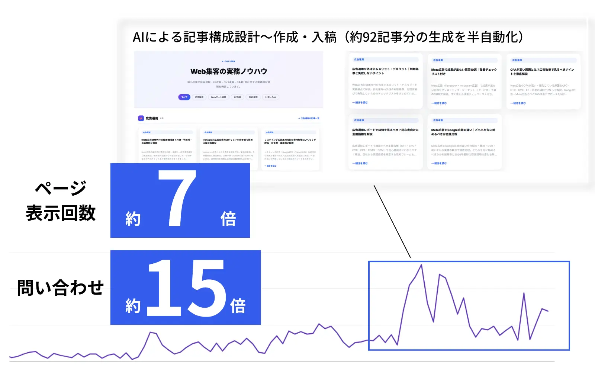

この記事でわかること
- 問い合わせまでに通る4つの関門と、詰まっている場所の見つけ方
- Search Consoleで最初に確認する数字
- 悩みが具体的なテーマを扱えているかの見分け方
- 記事の導線・計測を見直すポイントと直す順番
- やってはいけない対応
結論：記事を増やしても問い合わせが来ないときは、記事を足す前に、「表示される → クリックされる → 次のページへ進む → 問い合わせが数えられる」のどこで人数が減っているかを特定してください。多くの場合、原因は本数ではなく、扱うテーマの層、記事の後の導線、計測のどれかにあります。直す順番は、計測、導線、テーマ、表示の順です。
問い合わせは「4つの関門」を通った先にある
「記事は100本以上あるのに、問い合わせが来ない」。オウンドメディアを運用している会社で、最も多い悩みのひとつです。原因を探すとき、いきなり記事の中身やデザインを直し始めると、的外れになりがちです。問い合わせまでには、順番に通る関門が4つあり、どの関門で人数が急に減っているかを先に特定する必要があります。
| 関門 | 見る数字 | 確認する場所 | 詰まっているサイン |
|---|---|---|---|
| ① 検索結果に出ているか | 表示回数・インデックス状況 | Search Console | 表示回数がほとんど無い、記事が「未登録」になっている |
| ② クリックされているか | クリック数・平均掲載順位 | Search Console | 表示はあるのにクリックが少ない |
| ③ 読まれて、次のページに進んでいるか | 閲覧数・次に開かれたページ | GA4などの計測ツール | 記事は読まれるが、サービスページや問い合わせページに誰も進まない |
| ④ 問い合わせが数えられているか | フォーム送信の計測 | 計測ツール・メール受信箱 | 実際には来ているのに、数字上は0件 |
この表は、当社が実務でレポートを読むときの整理です。Googleの公式な基準ではありません。ただし、表示回数とクリックの定義はGoogleが公開しています。表示回数は「リンクが検索結果ページに掲載されたこと」を数える指標で、クリック数は「Googleからサイトへのリンクがクリックされた回数」です。（出典：検索パフォーマンス レポート（ウェブ検索）｜Search Console ヘルプ）
ポイント：「記事数」を増やしているのは、関門①の入口を広げている作業です。②〜④で詰まっていれば、記事を増やしても問い合わせはほとんど増えません。
確認①：記事は検索結果に出ているか
最初に見るのは、記事がそもそも検索結果に載っているかです。Search Consoleの「検索パフォーマンス」で、期間を直近28日にして、表示回数が1回以上ある記事が何本あるかを数えます。ページ別の表を表示回数の多い順に並べ、下までスクロールして本数を確認してください。
10分でできる確認手順
- Search Consoleの検索パフォーマンスで、期間を「過去28日間」にし、「ページ」タブを開く
- 公開している記事数と、表示回数が出ているページ数を比べる
- 差が大きいときは、「インデックス作成」のページ（ページのインデックス登録）で、未登録の理由を見る
- 表示がある記事は、表示回数の上位10本のテーマが、問い合わせにつながる悩みかを見る
公開した記事の多くに表示回数が出ていないなら、問題は「問い合わせ導線」より前の段階です。この場合の原因の見分け方と対処は、インデックス未登録の対処法｜原因の見分け方と手順にまとめています。
当社が見てきた範囲では、公開直後の数か月は、表示のある記事が公開本数の一部にとどまるのが普通です。記事を増やす速度と、検索結果に載る速度は同じではありません。「本数のわりに成果が薄い」と感じる最初の理由は、ここにあることが多いです。
確認②：表示されている記事が「問い合わせにつながる悩み」を扱っているか
表示もクリックもあるのに問い合わせが来ない場合、多いのが狙っているキーワードの層の問題です。検索する人の段階は、大きく次のように分けられます。
| 検索する人の段階 | 検索の例 | 問い合わせへの近さ |
|---|---|---|
| 知りたい（情報収集） | 「SEOとは」「オウンドメディア 始め方」 | 遠い。読んで満足して離れる人が多い |
| 困っている（悩みが具体的） | 「記事を増やしても問い合わせが来ない」「リニューアル後 問い合わせ 減った」 | 近い。原因と直し方を探している |
| 選んでいる（比較検討） | 「SEO対策 会社 おすすめ」 | 最も近いが、競合が多く上位に入りにくい |
記事の大半が「知りたい」段階のテーマだと、読まれても、相談したくなる理由が生まれません。自社の表示回数の上位10本を並べて、「この記事を読んだ人は、いま何に困っているか」を一言で書いてみてください。「特に困っていない」と書く記事が多いなら、そこが原因です。
Googleは、検索エンジンのためではなく、人の役に立つコンテンツを作るよう案内しています。読者の状況に合った内容にすることが基本です。（出典：有用で信頼性の高い、ユーザー第一のコンテンツの作成｜Google 検索セントラル）
注意：「知りたい」段階の記事を減らす必要はありません。信頼を作る入口として役立ちます。問題は、すべての記事がその段階だけで終わっていて、悩みが具体的な記事が1本も無いことです。
確認③：読まれているのに、次のページに進まれていないか
悩みに合った記事が読まれているのに問い合わせが無いときは、記事を読んだ後の導線を見ます。見るのは、記事ページの下の次の3点です。
結論に近い場所にCTAがあるか
記事の最後にだけボタンがあると、途中で必要な答えを得た人は離れます。悩みへの答えが出た直後に、次の一歩を置きます。
ボタンの文言が「相談」の中身を示しているか
「お問い合わせ」だけでは、何を相談できるのか分かりません。「この記事の悩みを無料で診断する」のように、行く先で得られるものを書きます。
送り先のページが、記事の悩みに合っているか
記事の悩みとまったく別のサービスページに送ると、読者は「自分の話ではない」と感じて離れます。
フォームが重くないか
必須項目が多い、スマホで入力しにくい、といった点は離脱の原因になります。自分のスマホで、最初から最後まで入力してみてください。
確認の仕方は簡単です。計測ツールで、記事ページの次に開かれたページを見ます。記事ごとにサービスページへ進んだ人が0なら、導線が機能していません。数字を見る前に、自分でスマホから記事を読み、「次に何をすればいいか」が分かるかを試すだけでも、多くの問題が見つかります。
確認④：問い合わせは来ているのに、数えられていないことがある
意外に多いのが、問い合わせ自体は届いているのに、計測の設定が無い、または崩れているケースです。次の点を確認します。
- フォームの送信を、計測ツール上で「成果」として数える設定になっているか
- サイトのリニューアルやフォーム変更のあとで、設定が外れていないか
- 電話・メール・チャットなど、フォーム以外の問い合わせ経路を数えているか
- 問い合わせ時に「どこで知ったか」を聞いているか（自由記述や選択式で）
ここで有効なのは、受信箱の実数と、計測ツールの数字を1か月分並べて比べることです。受信箱のほうが多ければ、計測が漏れています。検索経由の問い合わせが、「直接」や「その他」に混ざって見えなくなっていることもあります。計測設定の見直し方は、計測・分析カテゴリの記事も参考にしてください。
症状別の直し方と優先順位
| 見つかった症状 | まずやること | 優先度 |
|---|---|---|
| 計測が漏れている（④） | フォーム送信の計測を直し、受信箱と1か月分を突き合わせる | 最優先。判断の土台になる |
| 読まれるが次に進まれない（③） | 表示回数の多い3〜5本の記事に、結論の直後のCTAと、悩みに合った送り先を足す | 高い。少ない手間で変化が見える |
| 悩みが具体的な記事が無い（②） | 顧客から実際に聞かれる悩みを、そのままテーマにした記事を足す | 高い。記事数を足すなら、まずここ |
| そもそも表示されない（①） | 未登録の理由を確認し、内部リンクと内容を直す | 状況による。大量にあるなら先に |
順番は、計測 → 導線 → テーマ → 表示が基本です。計測が崩れたまま記事を足しても、効果が見えず、判断を誤るためです。すでにある記事を直す順番は、記事リライトの優先順位｜3指標での選び方と手順で、3つの指標から決める方法を紹介しています。
やってはいけない対応
注意：「問い合わせが来ない＝記事が足りない」と決めつけると、費用だけが増えます。
- 原因を特定する前に、記事の本数だけを増やす：詰まっている関門が②〜④なら、本数を足しても問い合わせは増えません。
- PVの大きさだけで成果を判断する：PVは関門③以降の質を示しません。問い合わせにつながる記事のPVを分けて見ます。
- すべてのCTAを同じ文言・同じ送り先にする：悩みごとに、送り先と文言を変えます。
- 数字の目安を他社の記事から借りて判断する：「一般的なCVRは◯％」といった数字は、出典が示されないことが多く、自社の業種や単価では当てはまりません。比べるのは、自社の前月と今月です。

LnXの見解
オウンドメディアの問い合わせは、記事の本数に比例して増えるわけではありません。当社が自社メディアを運用して実感しているのは、本数を出すことと、問い合わせにつなげることは別の設計だという点です。当社は約3か月で113記事を入稿し、ページ表示回数は約7倍、問い合わせは約15倍になりました。ただし、これは記事を増やしただけの結果ではありません。何の悩みを扱い、どこへ送り、何を数えるかを決めたうえで、本数を出した結果です。
「問い合わせが来ない」と相談を受けたとき、最初に確認するのは、記事の質ではなく4つの関門のどこで詰まっているかです。ここが分かれば、直すべき作業は自然に決まります。逆に、分からないまま記事を増やす、外注先を変える、といった判断は、お金と時間を失いやすいと考えています。
LnXは、診断から記事制作、リライト、計測の整備までをSEO・AIO対策として一貫して支援しています。まず現状のどこで詰まっているかを知りたい場合は、無料のAIO診断をご利用ください。
※Search Consoleの画面や指標の定義は更新されることがあります。実際の確認の際は、最新のGoogle公式ヘルプも参照してください。
よくある質問
Qオウンドメディアは何本くらいで問い合わせが来ますか？
本数に決まった基準はありません。当社の自社メディアでは約3か月で113記事を入稿し、問い合わせが増えましたが、これは扱うテーマ・導線・計測を設計した結果です。本数よりも、悩みが具体的なテーマの記事があるか、読んだ後の導線があるかを先に確認してください。
QPVは増えているのに問い合わせが増えません。何を見ればいいですか？
PVを記事ごとに分け、問い合わせにつながる悩みを扱う記事のPVが増えているかを見ます。次に、その記事から次に開かれたページを確認します。全体のPVだけでは、関門③と④のどちらで詰まっているかが分かりません。
Q問い合わせが来ているのに計測できていないことはありますか？
あります。フォーム送信の計測設定が外れている、電話やメールの問い合わせを数えていない、といったケースです。受信箱の実数と計測ツールの数字を1か月分並べて比べると、漏れが分かります。
Q記事を外注する前に、自分たちで確認できることはありますか？
あります。Search Consoleで表示のある記事数を数える、表示上位10本のテーマが悩みを扱っているかを見る、自分のスマホで記事から問い合わせまで進んでみる、の3つは社内で数時間でできます。この結果によって、外注して直す範囲が変わります。
Q比較検討のキーワード（会社・おすすめ）だけを狙えばよいですか？
おすすめしません。問い合わせに近い反面、競合が多く上位に入りにくいためです。悩みが具体的なキーワードと組み合わせ、悩みの記事から比較・サービスへ案内する流れを作るほうが、手堅く進められます。